Introduction
Ce rapport accompagne le relevé d'audit effectué sur le site « 112.public.lu ».
La méthodologie d'audit employée repose sur le référentiel RGAA 4.1, consultable à l'adresse suivante : https://accessibilite.public.lu/fr/rgaa4.1/criteres.html
L'audit a été réalisé au moyen de l'utilisation de navigateurs web et d'outils spécialisés. Des tests de restitution ont également été effectués conformément à la base de référence définie par le RGAA 4.1.
Échantillon
L'audit a porté sur un échantillon de 16 pages pour le niveau double A (AA) :
| Nº page | Titre de la page | URL |
|---|---|---|
| P01 | Accueil | https://112.public.lu/fr.html |
| P02 | Contact | https://112.public.lu/fr/support/contact.html |
| P03 | Aspects légaux | https://112.public.lu/fr/support/aspects-legaux.html |
| P04 | Accessibilité | https://112.public.lu/fr/support/aspects-legaux.html |
| P05 | Plan du site | https://112.public.lu/fr/support/plan.html |
| P06 | Résultats de recherche | https://112.public.lu/fr/support/recherche.html?q=secours |
| P07 | Poste de secours | https://112.public.lu/fr/CGDIS-Newsletter/centre-de-vaccination.html |
| P08 | Hôpitaux et pharmacies | https://112.public.lu/fr/urgences/hopitaux.html |
| P09 | Besoin d'un dispositif de secours lors d'une manifestation | https://112.public.lu/fr/urgences/ambulances.html |
| P10 | Les Centres d'incendie et de secours (CIS) | https://112.public.lu/fr/organisation/secours.html |
| P11 | Le Plan National d'Organisation des Secours (PNOS) | https://112.public.lu/fr/organisation/PNOS.html |
| P12 | Corps grand-ducal d'incendie et de secours | https://112.public.lu/fr/organisation/administration.html |
| P13 | Publications | https://112.public.lu/fr/publications/magasinn-onnertzwielef-112/honnertzwielef112avril2022.html |
| P14 | FAQ | https://112.public.lu/fr/support/faq.html |
| P15 | Actualités | https://112.public.lu/fr/actualites.html |
| P16 | Séance du conseil d'administration du CGDIS du 19 mai 2022 | https://112.public.lu/fr/actualites/2022/conseil-d-administration-du-19-mai-2022.html |
Environnement de test (base de référence)
Quelques critères RGAA, notamment ceux de la thématique JavaScript, incluent des tests de restitution à effectuer sur des technologies d'assistance associées à des navigateurs et des systèmes d'exploitation. Pour qu'un dispositif HTML / WAI-ARIA ou son alternative soit considéré comme compatible avec l'accessibilité, il faut qu'il soit pleinement fonctionnel, en termes de restitution et de fonctionnalités sur certaines combinaisons. Vous trouverez une explication détaillée de cet environnement de tests dans le document du RGAA 4.1.
Nous détaillons ci-dessous la base de référence utilisée pour réaliser les tests de restitution des composants du site.
Environnement de test – ordinateur
| Technologie d'assistance | Navigateur |
|---|---|
| NVDA 2021.3 | Firefox 101 |
| JAWS 2021 | Firefox 101 |
| VoiceOver | Safari 15.5 |
Environnement de test — mobile
| Système d'exploitation | Technologie d'assistance | Navigateur |
|---|---|---|
| Android 10 | TalkBack (dernière version) | Chrome 74 |
| iOS 15.5 | VoiceOver (dernière version) | Safari |
Accessibilité des pages auditées
Le site présente un niveau général d'accessibilité moyen.
Le niveau moyen de conformité relevé atteint 54,93 % de conformité sur l'ensemble des pages auditées, avec 51,85 % de conformité au niveau simple A (A) et 64,71 % de conformité au niveau double A (AA).
Le site est partiellement conforme.
Conformité RGAA 4.1 du site
| Conforme | Non conforme | |
|---|---|---|
| A | 51,85% | 48,15% |
| AA (légal) | 54,93% | 45,07% |
Note sur le calcul de conformité
La conformité globale (Tableau « Conformité RGAA 4.1 ») est calculée de la manière suivante : C / (C+NC). C est le nombre de critères conformes et NC le nombre de critères non conformes.
C'est ce nombre qui constitue la référence légale. Il représente le taux de conformité de l'échantillon.
Il est normal que le taux de conformité global diffère sensiblement du taux de conformité par page. En effet, un critère NC (non conforme) sur une page rend le critère non conforme sur l'ensemble de l'échantillon.
Pour qu'un site soit conforme (100 % des critères applicables sont conformes au niveau AA), il est nécessaire que le taux de conformité par page équivaille à 100 %.
Conformité pour chaque niveau
| Conforme | Non conforme | |
|---|---|---|
| A | 51,85% | 48,15% |
| AA | 64,71% | 35,29% |
Moyenne par pages
| Nº page | Titre de la page | %C |
|---|---|---|
| P01 | Accueil | 71,11% |
| P02 | Contact | 86,36% |
| P03 | Aspects légaux | 90,91% |
| P04 | Accessibilité | 94,44% |
| P05 | Plan du site | 100,00% |
| P06 | Résultats de recherche | 82,93% |
| P07 | Poste de secours | 93,75% |
| P08 | Hôpitaux et pharmacies | 97,22% |
| P09 | Besoin d'un dispositif de secours lors d'une manifestation | 88,64% |
| P10 | Les Centres d'incendie et de secours (CIS) | 94,44% |
| P11 | Le Plan National d'Organisation des Secours (PNOS) | 78,72% |
| P12 | Corps grand-ducal d'incendie et de secours | 83,33% |
| P13 | Publications | 87,50% |
| P14 | FAQ | 97,14% |
| P15 | Actualités | 87,18% |
| P16 | Séance du conseil d'administration du CGDIS du 19 mai 2022 | 92,11% |
Moyenne par thématiques
| Thématiques | C | NC |
|---|---|---|
| Images | 50,00% | 50,00% |
| Cadres | 0,00% | 100,00% |
| Couleurs | 33,33% | 66,67% |
| Multimédia | 50,00% | 50,00% |
| Tableaux | 100,00% | 0,00% |
| Liens | 0,00% | 100,00% |
| Script | 33,33% | 66,67% |
| Eléments obligatoires | 66,67% | 33,33% |
| Structuration | 0,00% | 100,00% |
| Présentation | 53,85% | 46,15% |
| Formulaires | 60,00% | 40,00% |
| Navigation | 70,00% | 30,00% |
| Consultation | 75,00% | 25,00% |
Impacts utilisateurs
Les principales personnes impactées sont les personnes aveugles et celles qui naviguent au clavier. Les problèmes liés aux scripts, à l'API ARIA et à l'ordre de tabulation rendent parfois difficile l'utilisation du site par ces utilisateurs.
Contenus dérogés
La dérogation est un moyen d'exclure du champ d'application du référentiel des contenus particuliers. Les cas de dérogations sont très encadrés, vous en trouverez le détail dans le guide des dérogations.
Les contenus suivants n'entrent pas dans le calcul de la conformité ni dans le périmètre des éléments à rendre accessibles, ils sont dérogés :
- Les contenus du bloc « Instagram 112 » (motif : contenu tiers) ;
- Les contenus du bloc « Facebook 112 » (motif : contenu tiers) ;
- La carte Mapbox de la page « Besoin d'un dispositif de secours lors d'une manifestation » (motif : carte avec la liste des adresses pour alternative).
Droit à la compensation
Les dérogations émises notamment pour charge disproportionnée demandent en contrepartie la mise en place d'un moyen de compensation pour les utilisateurs. Pour les documents bureautiques par exemple, vous devez fournir un moyen à l'utilisateur de demander une version accessible d'un document s'il en a besoin. Cela peut être un mail ou un formulaire de contact.
Note sur le relevé des non-conformités
Ne sont cités dans ce rapport que quelques exemples issus du relevé des non-conformités.
De plus, toutes les occurrences d'une non-conformité ne sont pas listées dans le relevé. Par exemple : les contrastes de couleur, le relevé mentionne quelques occurrences, mais ne les cite pas tous.
Avis
Le site a un niveau d'accessibilité moyen. Le site ne semble pas utiliser de fonctionnalités complexes, la mise en œuvre des correctifs ne devrait donc pas poser de problèmes particuliers.
Les non-conformités les plus bloquantes pour les utilisateurs concernent :
- Des fonctionnalités JavaScript ne sont pas compatibles avec les technologies d’assistance (notamment le composant de chargement des vidéos et le carrousel), ou font un usage inapproprié de propriétés ARIA ;
- Une navigation au clavier inaccessible (ordre de tabulation, affichage des sous-menus et visibilité de la prise de focus) ;
- Des liens vides ou aux intitulés non pertinents ;
- Une alternative à une carte masquée ;
- Des vidéos sans transcription ni sous-titres ;
- La structure HTML et les landmarks ARIA ;
- Une image porteuse d'information sans description détaillée.
Ce sont donc ces points qui devront nécessiter une attention toute particulière et qui demanderont le plus d'efforts.
Annexe technique
Images
Recommandation
Donner à chaque image porteuse d'information une alternative textuelle pertinente et une description détaillée si nécessaire. Lier les légendes à leurs images. Remplacer les images textes par du texte stylé lorsque c'est possible.
Images de décoration
Le site contient des images de décoration qui ne sont pas correctement identifiées, soit parce qu'elles ont une alternative renseignée, soit parce qu'il manque les attributs nécessaires pour qu'elles soient ignorées par les technologies d'assistance.
Ces images n'apportent aucune information et peuvent causer des problèmes de compréhension pour les aveugles et les grands malvoyants qui vont écouter les contenus avec un lecteur d'écran.
- Dans le cas d'une image insérée avec la balise
img, mettre unalt="". - Dans le cas d'une image insérée avec la balise
svg, mettre une propriété ARIAaria-hidden="true".
Constats sur le site
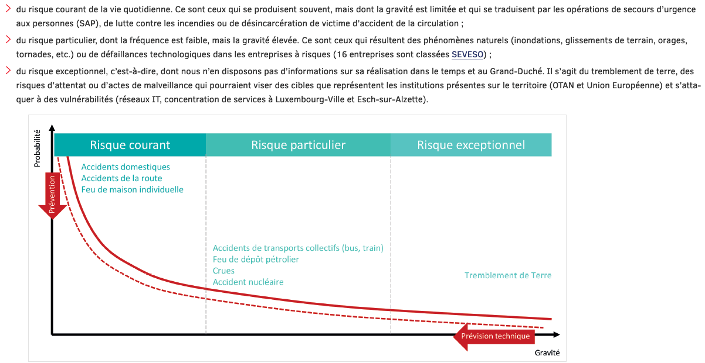Page « Le Plan National d'Organisation des Secours (PNOS) », presque tous les contenus du graphique sont repris dans le texte, sauf quelques textes, par exemple « accidents domestiques », « accidents de transports collectifs (bus, train) », etc. Le fait d'ajouter ces textes au contenu de la page permettra de faire de cette image une image décorative.
Images porteuses d'information complexe
Certaines images porteuses d'informations sont complexes et nécessitent une description détaillée, pertinente, structurée et adjacente à l'image afin de permettre aux personnes ne percevant pas les images (comme les personnes aveugles), ou ayant des difficultés à les comprendre lorsqu'elles contiennent du texte (personnes ayant des difficultés de lecture, comme les dyslexiques par exemple) d'accéder à l'information.
Il sera possible de masquer cette description et de prévoir un bouton permettant à l'utilisateur de l'afficher si besoin (par exemple : « Afficher la description de l'image »). Voir un exemple de ce mécanisme. Il est également possible de proposer un lien adjacent à l'image vers la description détaillée.
Constats sur le site
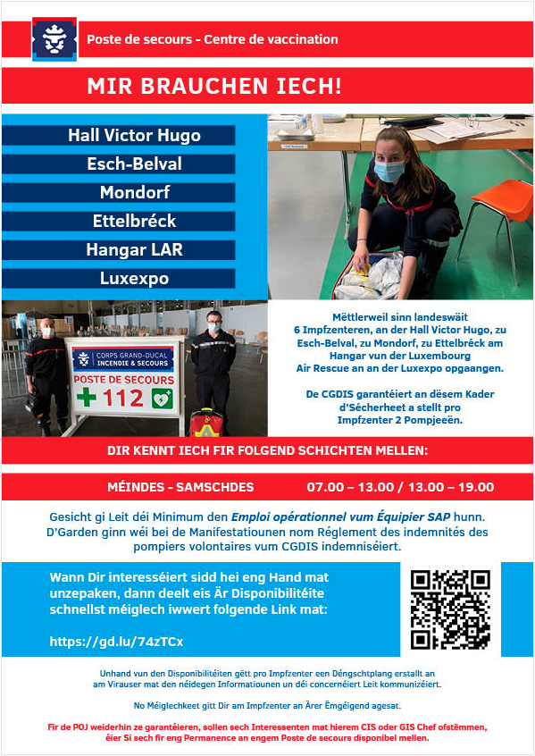Page « Poste de secours », l'image « Poste de secours - Centre de vaccination » n'a pas de description détaillée.
Cadres
L'absence d'identification des cadres peut poser un problème de repérage dans la structure de la page ou de compréhension des contenus pour les personnes aveugles.
Constats sur le site
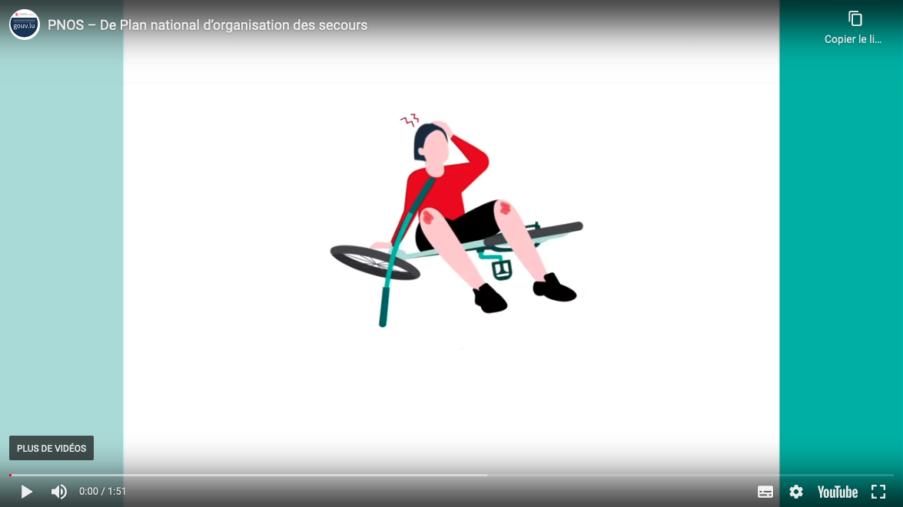 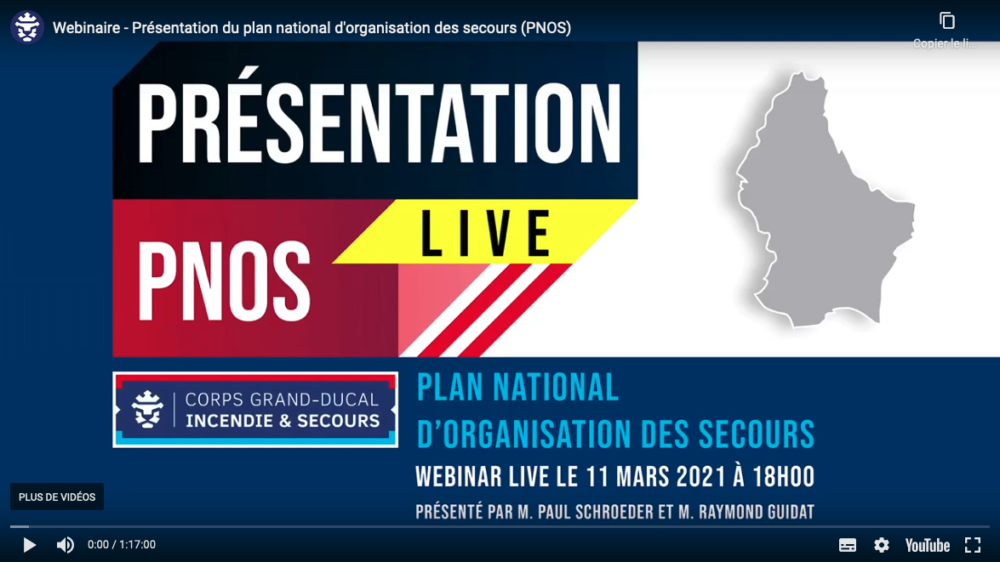Page « Le Plan National d'Organisation des Secours (PNOS) », les cadres (<iframe>) YouTube n'ont pas de titre.
Couleurs
Recommandation
Ne pas donner l'information uniquement par la couleur et utiliser des contrastes de couleurs suffisamment élevés pour les textes et les composants d'interface.
Contrastes des textes
Plusieurs couleurs présentent un rapport de contraste insuffisant, ce qui peut poser problème aux personnes déficientes visuelles qui ont des difficultés à percevoir les couleurs ou les contrastes.
Rapports de contrastes définis par le RGAA
- Pour les textes qui ont une taille de police calculée inférieure à 24px sans effet de graisse ou une taille de police calculée inférieure à 18,5px avec effet de graisse, le rapport de contraste entre la couleur du texte (y compris le texte en image) et son arrière-plan doit être de 4.5:1, au moins.
- Pour les textes qui ont une taille de police calculée supérieure ou égale à 24px sans effet de graisse ou une taille de police calculée supérieure ou égale à 18,5px avec effet de graisse, le rapport de contraste entre la couleur du texte (y compris le texte en image) et son arrière-plan doit être de 3:1, au moins.
Vous pouvez foncer les couleurs pour obtenir le rapport de contraste exigé.
Si la charte graphique ne peut être modifiée, fournissez une méthode aux utilisateurs pour consulter le site avec des contrastes suffisants. Ceci peut être réalisé simplement avec une fonctionnalité JavaScript et une surcharge CSS des couleurs.
Vous pouvez voir un exemple de ce type de mécanisme sur le site sncf.com. Dans les réglages d'accessibilité, vous trouverez une option qui permet d'afficher le site avec des contrastes renforcés et inversés.
Constats sur le site
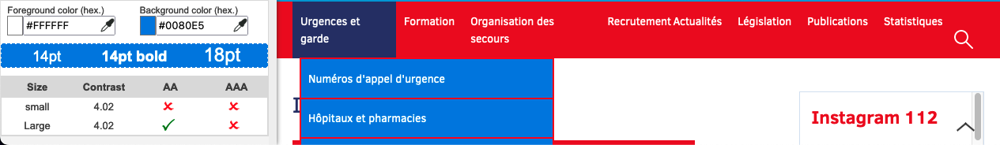 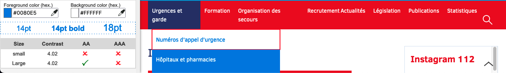Page d'accueil :
- La couleur #fff des liens des sous-menus sur le fond #0080E5 (ratio : 4.02).
- La couleur #0080E5 des liens des sous-menus au survol sur le fond #fff (ratio : 4.02).
Contraste des composants d'interface
Les composants d'interface, les illustrations porteuses d'information ou encore les mises en couleurs porteuses d'information doivent être suffisamment contrastés pour être perçus par les utilisateurs ayant des troubles de perception des couleurs. Par exemple, une icône porteuse d'information devra avoir un rapport de contraste avec la couleur de fond de 3. De même, pour un champ de saisie de formulaire, dont la zone active est matérialisée par sa bordure, alors la couleur de cette bordure devra avoir un rapport de contraste de 3 avec la couleur de fond de la page.
Constats sur le site
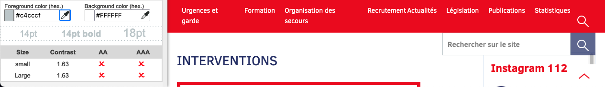Page d'accueil, la couleur #c4cccf de la bordure du champ de recherche sur le fond #fff (ratio : 1.63).
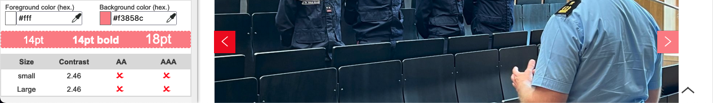Page « Séance du conseil d'administration du CGDIS du 19 mai 2022 », la couleur #fff des boutons de navigation du carrousel au survol sur le fond #f3858c (ratio : 2.46).
Multimédia
Recommandation
Donner si nécessaire à chaque média temporel une transcription textuelle, des sous-titres synchronisés et une audiodescription synchronisée pertinents. Donner à chaque média non temporel une alternative textuelle pertinente. Rendre possible le contrôle de la consultation de chaque média temporel et non temporel au clavier et s'assurer de leur compatibilité avec les technologies d'assistance.
Identifier les vidéos
Il est nécessaire d'identifier la vidéo et permettre ainsi aux utilisateurs de comprendre quelle est l'information présentée dans ce contenu.
Vous disposez de deux méthodes pour le faire :
- soit faire précéder la vidéo par un titre (solution recommandée) ;
- soit faire suivre la vidéo d'une phrase de légende (paragraphe).
Constats sur le site
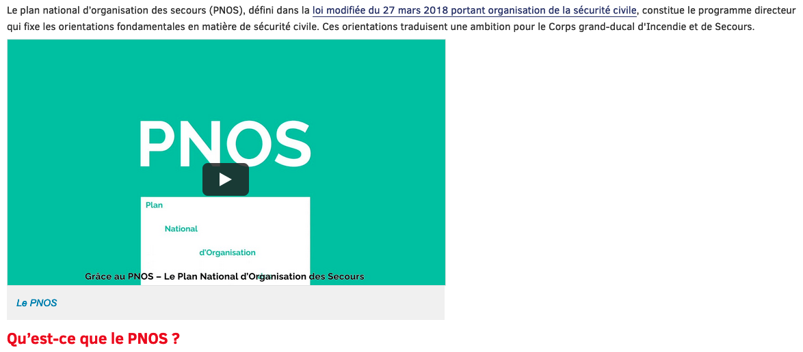 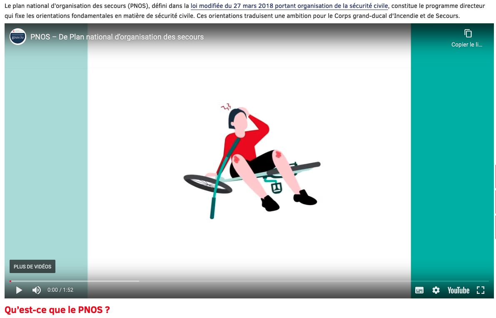Page « Le Plan National d'Organisation des Secours (PNOS) », les titres des vidéos disparaissent une fois celles-ci lancées. Les vidéos ne peuvent plus être identifiées.
Transcription textuelle
Les vidéos présentes sur le site ne disposent pas de transcription textuelle. Il s'agit d'un impact majeur d'accessibilité. En effet, la transcription textuelle est utile pour différents types d'utilisateurs (aveugles, malvoyants, sourds, malentendants, handicapés moteurs, handicapés cognitifs).
Cette transcription doit être un fichier structuré (docx, HTML) qui reprend toutes les informations présentes (visuelles et sonores) dans la vidéo.
Cette transcription peut être située :
- soit sur la même page que la vidéo ;
- soit ailleurs sur le site. Dans ce cas, ajouter alors un lien vers la transcription sous la vidéo par exemple.
Constats sur le site
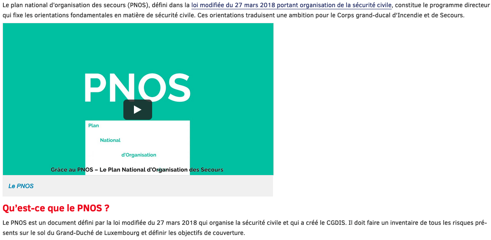 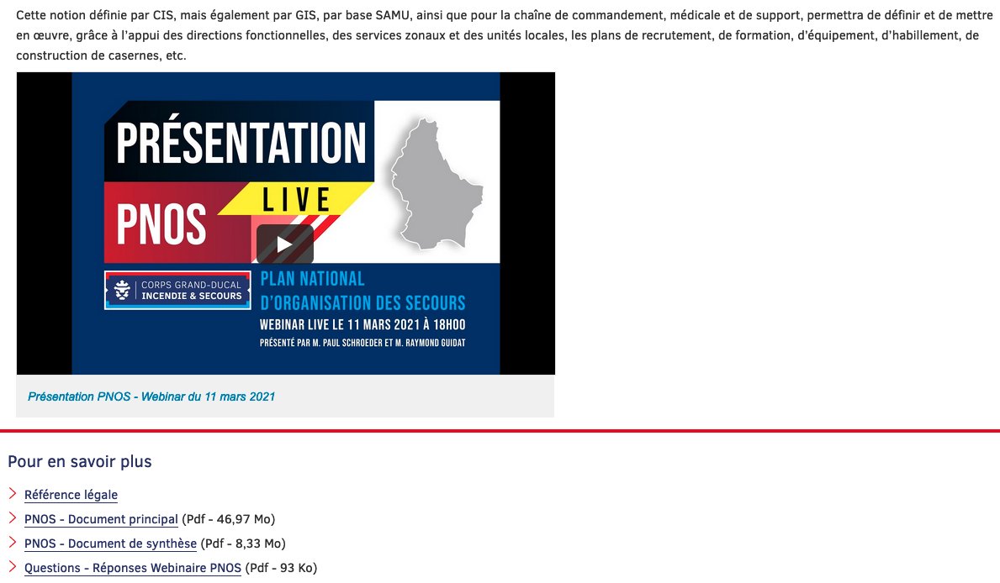Page « Le Plan National d'Organisation des Secours (PNOS) », les vidéos n'ont pas de transcription textuelle.
Sous-titres
Chaque vidéo doit disposer de sous-titres synchronisés pertinents, pour permettre aux utilisateurs sourds ou malentendants d'accéder au contenu oralisé de la vidéo.
L'utilisateur doit pouvoir activer ou désactiver les sous-titres depuis le lecteur vidéo. Si ce n'est pas possible, une solution consiste à fournir deux versions de la même vidéo : une version sans sous-titres et une version sous-titrée (On fera ensuite un lien réciproque de l'une vers l'autre).
Constats sur le site

Page « Le Plan National d'Organisation des Secours (PNOS) », les sous-titres de la vidéo « Présentation PNOS - Webinar du 11 mars 2021 » ont été générés automatiquement par YouTube.
Liens
Recommandation :
Donner des intitulés de lien explicites, grâce à des informations de contexte notamment, utiliser le titre de lien le moins possible. S'assurer que le nom visible est contenu dans le nom accessible.
Pertinence des intitulés
Un lien possède généralement un intitulé et un contexte. L'intitulé est le texte présent dans la balise <a> (ou la valeur de l'attribut alt de l'image dans le cas d'un lien-image) et le contexte du lien est représenté par le titre qui précède, le titre du lien (l'infobulle) ou tout simplement le texte dans lequel il est inséré.
Pour être considéré comme pertinent, l'intitulé d'un lien doit permettre de comprendre sa destination en prenant en compte son contexte.
Liens-images
Un lien-image est un lien dont le contenu n'est composé que d'une ou plusieurs images (balises <img>). Généralement, ces liens ne posent aucun problème aux utilisateurs voyants qui parviennent à comprendre la destination du lien grâce à l'image et son contexte. En revanche, pour une personne aveugle, ces liens doivent obligatoirement posséder un intitulé.
L'intitulé d'un lien-image est généré grâce à l'alternative de l'image contenue dans ce lien.
Constats sur le site
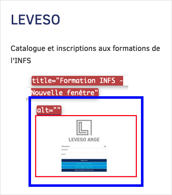Page d'accueil:
- Le lien-image du bloc « Leveso » est vide ;
- Les liens-images des réseaux sociaux n'ont pas d'intitulé pertinent.
Page « Poste de secours », le lien-image « Poste de secours - Centre de vaccination » n'a pas d'intitulé.
Titres de liens (infobulles)
La restitution des titres de liens (attribut title sur une balise) dépend fortement des lecteurs d'écran et des préférences utilisateurs. Ainsi, l'utilisation de ces infobulles doit être limitée aux cas où l'infobulle apporte de l'information supplémentaire par rapport à l'intitulé du lien. De plus, cette infobulle doit reprendre au moins l'intitulé du lien pour être considérée comme conforme.
Constats sur le site
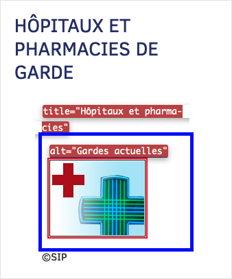Page d'accueil, l'attribut title du lien-image du bloc « Hôpitaux et pharmacies de garde » ne reprend pas le nom accessible du lien.
Scripts
Recommandation :
Donner si nécessaire à chaque script une alternative pertinente. Rendre possible le contrôle de chaque code script au moins par le clavier et la souris et s'assurer de leur compatibilité avec les technologies d'assistance. Identifier les messages de statut lorsque c'est nécessaire.
Utilisation des boutons et des liens
Pour les aveugles et les grands malvoyants qui utilisent un lecteur d'écran, ce manque de distinction claire entre les liens et les boutons peut poser de graves problèmes.
Ainsi, un bouton implémenté sous la forme d'un lien qui déclenche une action de la page, risque de perturber l'utilisateur qui s'attendra au chargement d'une nouvelle page.
De manière générale, les liens devraient être réservés à l'affichage d'une nouvelle page ou la création de liens d'accès rapide dans le contenu. Dans tous les autres cas, l'emploi d'un bouton d'action est plus pertinent.
Enfin, chaque bouton doit avoir un nom accessible défini, soit par l'intermédiaire d'un texte (visible ou positionné hors écran) ou d'une propriété title, aria-label ou aria-labelledby.
Constats sur le site
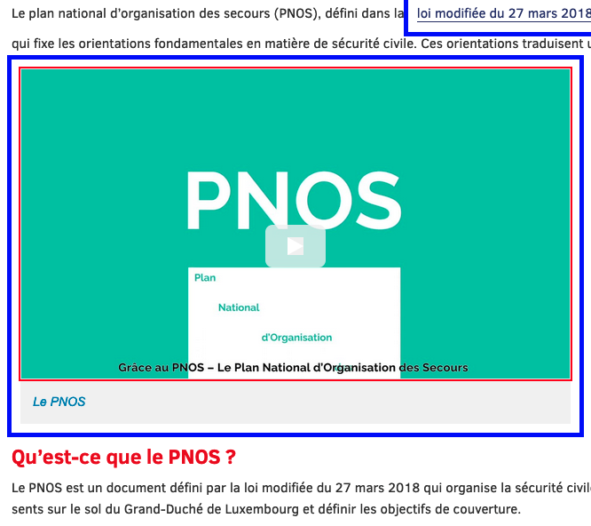Page « Le Plan National d'Organisation des Secours (PNOS) », les composants de chargement des vidéos déclenchent des événements JavaScript, mais sont implémentés dans des liens. Ils doivent être implémentés dans des éléments <button>.
Utilisation inappropriée de propriétés ARIA
Les propriétés ARIA sont chargées de transmettre des informations indispensables à la restitution et l'utilisation des composants développés avec JavaScript aux technologies d'assistance. Une utilisation inappropriée peut poser des problèmes de restitution notamment.
Constats sur le site
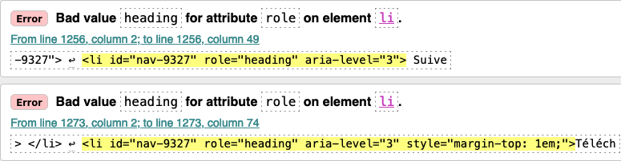Page d'accueil, le role="heading" n'est pas autorisé sur les éléments de liste <li>.
Éléments interactifs inaccessibles au clavier
Si un élément ne peut pas recevoir le focus ou n'est pas totalement utilisable au clavier, les utilisateurs pour lesquels le clavier est le seul moyen de naviguer seront bloqués.
Constats sur le site
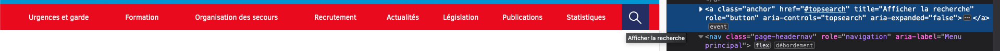Page d'accueil, le bouton « Afficher la recherche » ne s'active pas à l'aide de la touche Espace.
Autres composants
Constats sur le site
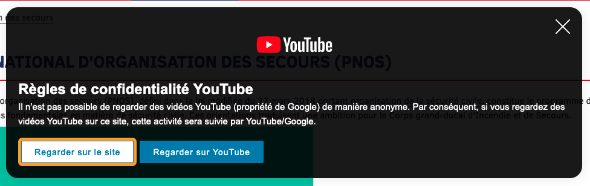Page « Le Plan National d'Organisation des Secours (PNOS) » :
- Au chargement d'une vidéo YouTube (après l'activation du bouton « Regarder sur le site » dans la fenêtre modale « Règles de confidentialité YouTube »), le focus n'est pas correctement repositionné. Il devrait être positionné sur le contenu que l'on vient de faire apparaître, soit l'
<iframe>YouTube ; - À l'activation du bouton « Regarder sur le site » de la fenêtre modale des « Règles de confidentialité YouTube », les deux vidéos sont lancées en même temps. Seule la vidéo pour laquelle on a affiché la fenêtre modale devrait se lancer.
Éléments obligatoires
Recommandation
Vérifier que chaque page web a un code valide selon le type de document, un titre pertinent et une indication de langue par défaut. Vérifier que les balises ne sont pas utilisées uniquement à des fins de présentation, que les changements de langues et de direction de sens de lecture sont indiqués.
Indication de langue
Les lecteurs d'écran utilisent les indications de langue pour vocaliser le contenu dans la langue définie. La page doit contenir une définition de langue principale (généralement sur l'élément html).
Ensuite, les éléments de langue étrangère présents dans le contenu doivent être signalés. Si on trouve dans la page des termes absents du dictionnaire de la langue principale de la page, il faut les identifier afin que le lecteur d'écran les restitue dans la langue appropriée. En effet, une mauvaise prononciation pourrait mener à des incompréhensions pour les utilisateurs qui reposent uniquement sur des restitutions orales. Les noms propres sont exclus de cette obligation.
Constats sur le site
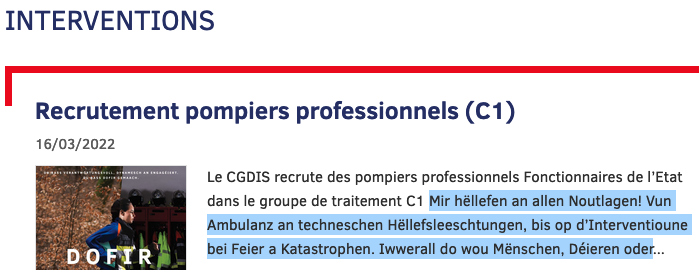 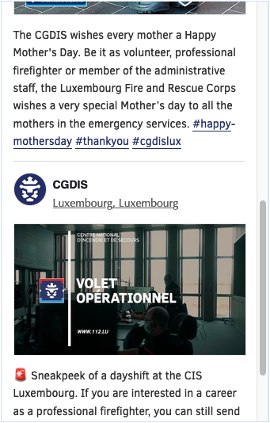Page d'accueil :
- Le texte de l'actualité du bloc « Interventions » n'est pas indiqué comme étant en langue luxembourgeoise ;
- Les contenus du bloc « Instagram 112 » sont a priori tous en Anglais, la langue peut donc être indiquée sur le bloc.
Validité du code
Les technologies d'assistance, comme les lecteurs d'écran ou les systèmes de contrôle à la voix, s'appuient sur le code des pages pour générer les restitutions et les interactions avec l'utilisateur. Un lecteur d'écran va exploiter le code HTML fourni par le navigateur et les informations accessibles au moyen des API d'accessibilité du système.
Si le code comporte des erreurs (balises mal fermées par exemple), il y a un risque que les fonctionnalités du lecteur d'écran soient impactées, comme la navigation de lien en lien par exemple.
Pour vérifier la conformité d'une page, vous pouvez utiliser le validateur mis à disposition par le W3C.
Constats sur le site
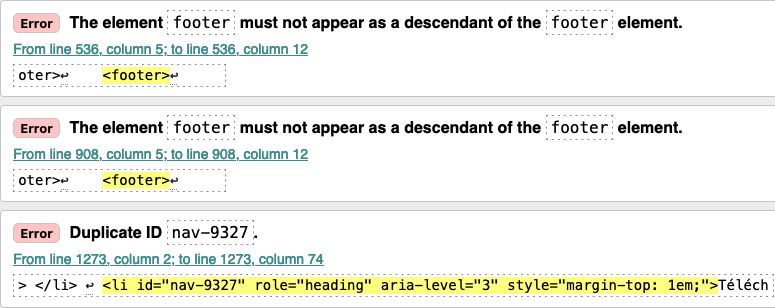Page d'accueil :
- Erreur d'imbrication de balises : des
<footer>dans des<footer>; - Valeur d'identifiant dupliquée : « nav-9327 ».
Page « Résultats de recherche », erreur d'imbrication de balises : un <ul> dans un <span>.
Balises utilisées à des fins de présentation
Les éléments de structure HTML ont chacun une sémantique particulière (paragraphe, titre, image, lien, etc.). Si les éléments sont mal employés (détournés de leur utilité première), cela peut poser des problèmes aux utilisateurs qui naviguent à l'aide d'une technologie d'assistance (lecteur d'écran, plug-in…). En effet, les technologies d'assistance disposent de raccourcis permettant de naviguer rapidement entre certains types d'éléments (paragraphes, titres, listes, etc.). Si ces éléments sont mal employés, les utilisateurs ne peuvent pas utiliser ces fonctionnalités de repère et de navigation dans le contenu.
Constats sur le site
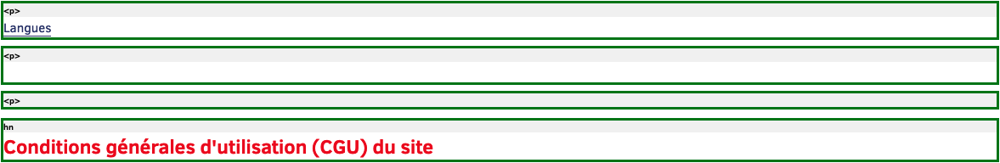Page « Aspects légaux », on trouve des paragraphes (<p>) vides servant à créer des espacements, par exemple entre le sommaire et le titre « Conditions générales d'utilisation (CGU) du site ».
Page « Résultats de recherche », ces textes sont uniquement structurés à l'aide de <span> :
- Le texte « 505 résultat(s) trouvé(s) » ;
- Le texte « Voir en premier: ».
Structuration de l'information
Recommandation
Utiliser des titres, des listes, des abréviations et des citations pour structurer l'information. S'assurer que la structure du document est cohérente.
Titres
Le titrage des contenus est une étape importante dans la structuration des contenus. Cela répond à deux besoins :
- identifier rapidement un contenu recherché ;
- naviguer rapidement dans le contenu en se déplaçant de titre en titre.
Un titrage correct fournit à l'utilisateur d'un lecteur d'écran un plan du document et lui permet de naviguer de titre en titre pour se déplacer plus rapidement dans le contenu de la page.
Pour valider la structure de votre page, vous pouvez utiliser l'extension Firefox HeadingsMap. Lorsque l'extension est active, sélectionnez l'onglet « Headings » et vérifiez la cohérence et l'imbrication des titres.
Constats sur le site
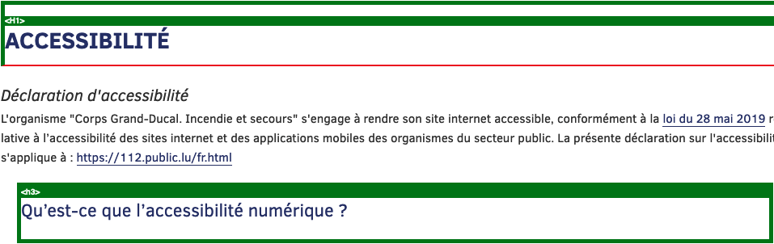Page « Accessibilité », le texte « Déclaration d'accessibilité » devrait être un titre.
Listes
La structuration en listes permet aux utilisateurs de lecteurs d'écran de consulter plus rapidement le contenu, grâce à des raccourcis spécifiques, et d'accéder directement à une liste ou de la passer sans avoir à en parcourir tous les items.
Constats sur le site
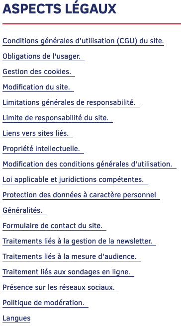Page « Aspects légaux », les liens du sommaire ne sont pas structurés sous forme de liste.
Structure du document
L'utilisation correcte des balises HTML5 et des landmarks ARIA va permettre d'enrichir la restitution pour les utilisateurs aveugles qui ne perçoivent pas les mises en forme : la navigation principale ne sera plus perçue simplement comme une liste de liens, elle sera restituée à l'utilisateur comme un élément de navigation, par l'intermédiaire du lecteur d'écran qui annoncera « région » ou « repère ».
De plus, ces marqueurs sémantiques vont également constituer des éléments de navigation rapide dans la page. Grâce à un raccourci clavier, certains utilisateurs vont pouvoir naviguer plus rapidement entre les régions qui auront été ainsi identifiées.
Constats sur le site
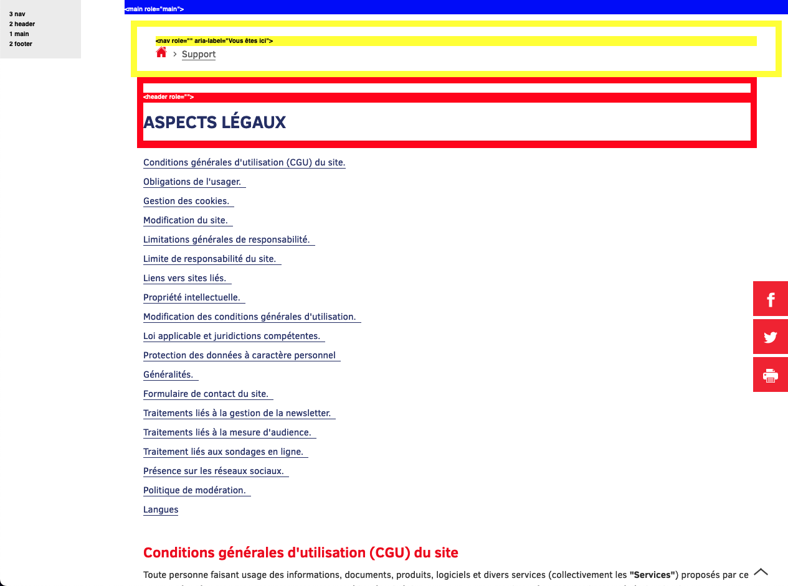Page « Aspects légaux », le sommaire n'est pas identifié comme zone de navigation.
Page « Résultats de recherche », la pagination n'est pas identifiée comme zone de navigation.
Présentation de l'information
Recommandation
Utiliser des feuilles de styles pour contrôler la présentation de l'information. Vérifier l'effet de l'agrandissement des tailles des caractères sur la lisibilité. S'assurer que les liens sont correctement identifiables, que la prise de focus est signalée, que l'interlignage est suffisant et donner la possibilité à l'utilisateur de contrôler la justification des textes. S'assurer que les textes cachés sont correctement restitués et que l'information n'est pas donnée uniquement par la forme ou la position d'un élément. S'assurer que les contenus sont lisibles et utilisables dans une fenêtre de largeur réduite. Veiller à ce que l'application de paramètres typographiques n'entraîne pas la perte de contenu ou de fonctionnalité. S'assurer que les contenus qui apparaissent au survol et à la prise de focus puissent être contrôlés par l'utilisateur.
Utilisation de CSS exclusivement
Certains utilisateurs qui présentent des troubles de la lecture (personnes dyslexiques par exemple), vont avoir besoin d'adapter la présentation des pages avec leurs propres mises en forme. Cela est possible sans difficulté si le site web utilise exclusivement les feuilles de styles CSS pour réaliser les mises en forme. Cependant, l'utilisation d'attributs et balises HTML de mise en forme rend ces adaptations plus compliquées, sinon impossibles.
Le RGAA donne la liste des attributs et balises qu'il est interdit d'utiliser.
Constats sur le site

Page « Hôpitaux et pharmacies », le tableau possède un attribut width.
Page « Le Plan National d'Organisation des Secours (PNOS) », les cadres (<iframe>) YouTube possèdent des attributs width, height et frameborder.
Contenu compréhensible sans les styles : ordre visible vs ordre réel
Un utilisateur aveugle n'a pas accès à la mise en forme qui parfois est porteuse d'informations importantes, notamment des relations entre les éléments.
Il est important de ne pas implémenter les textes dans l'ordre visuel, mais bien dans l'ordre logique de dépendance et hiérarchie des éléments.
Le contenu doit rester compréhensible sans les feuilles de styles (vous pouvez tester vos contenus en désactivant les feuilles de styles).
Constats sur le site
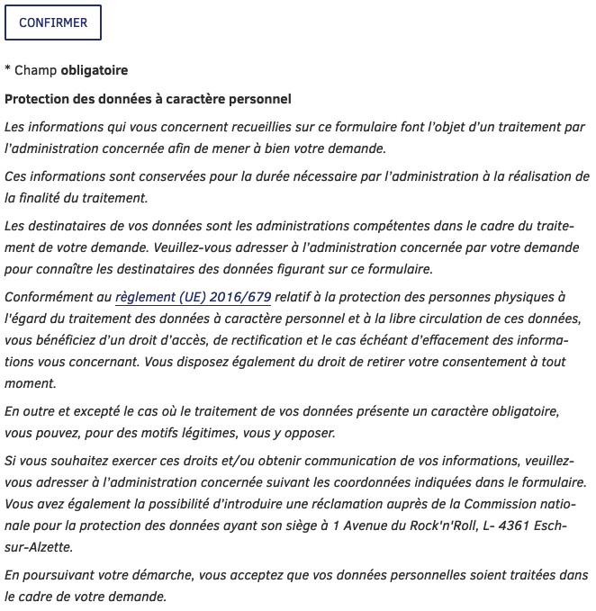Page « Contact », le bloc « Protection des données à caractère personnel » apporte des informations sur le traitement des données du formulaire, mais il se trouve après le bouton de soumission « Confirmer ».
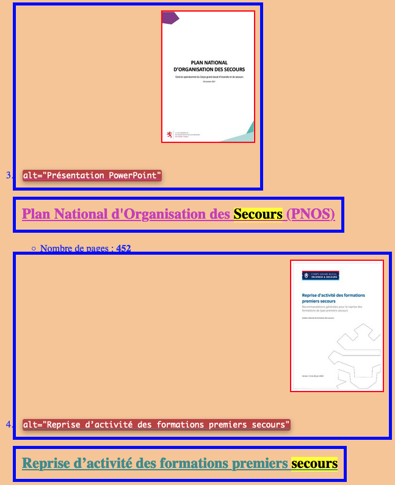Page « Résultats de recherche », des liens-images avec intitulé se trouvent avant le titre auquel ils font référence dans le code source.
- Ajouter des attributs
aria-hidden="true"ettabindex="-1"à ces liens, comme c'est le cas sur certains liens-images de la page ; - Ou déplacer les liens-images après leur titre dans le code source.
Visibilité de la prise de focus
Les personnes avec un handicap moteur qui naviguent au clavier peuvent rencontrer des difficultés considérables à utiliser du contenu si elles ne sont pas en mesure de repérer l'indication visuelle du focus et ses déplacements.
Constats sur le site
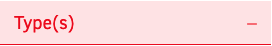Page « Résultats de recherche », la prise de focus n'est pas suffisamment contrastée sur l'élément <summary> « Type(s) ».
Page « FAQ »
- La prise de focus n'est pas suffisamment contrastée sur les éléments
<summary>; - La prise de focus n'est pas visible sur les éléments
<summary>.
Contenus cachés
Les aveugles et grands malvoyants qui utilisent un lecteur d’écran ont un accès séquentiel à l’information. Si les contrôles sont situés après les contenus qu'ils permettent d'afficher ou masquer, et ne sont pas pris en charge par un motif de conception ARIA, ces utilisateurs rencontreront des difficultés majeures pour retrouver les contenus contrôlés ce qui peut aboutir à ce qu’ils les ignorent ou provoquer des incompréhensions graves.
Constats sur le site
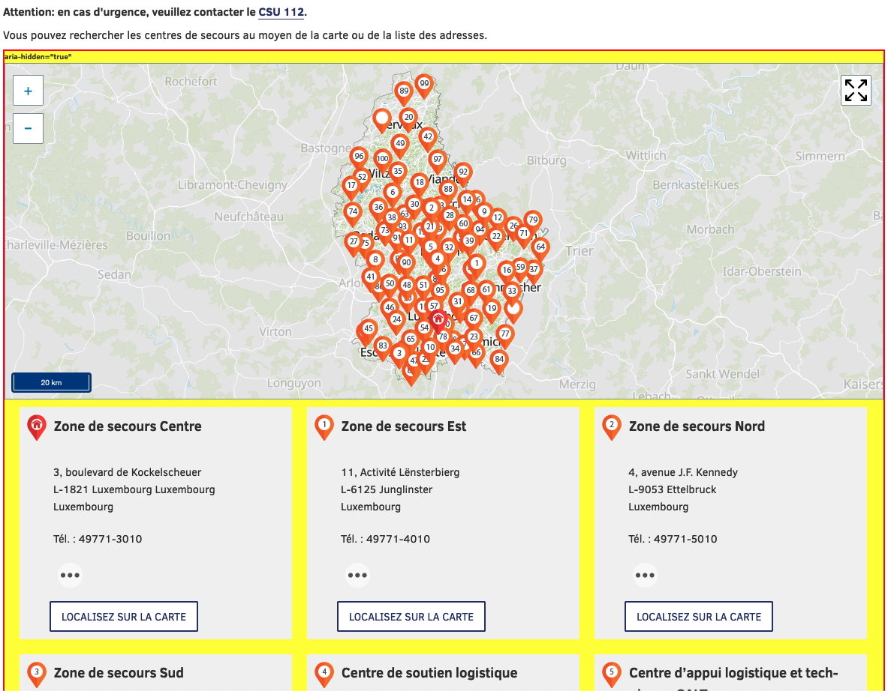Page « Les Centres d'incendie et de secours (CIS) », un attribut aria-hidden="true" empêche la restitution de la liste des adresses par les technologies d'assistance alors qu'il s'agit de l'alternative à la carte.
Contenus additionnels au survol et au focus
Les contenus additionnels qui apparaissent au survol ou à la prise de focus (par exemple, un menu déroulant, une infobulle d'information), peuvent être contrôlés par l'utilisateur. Par exemple, les utilisateurs malvoyants utilisateurs de loupes d'écran peuvent déclencher l'affichage accidentel des contenus qui apparaissent au survol et ces affichages non désirés perturbent la consultation pour ces utilisateurs. L'utilisateur doit alors disposer d'un moyen simple pour les masquer et continuer sa consultation.
Également, en utilisant une loupe d'écran, il est probable que le contenu additionnel soit en fait apparu en dehors de la zone de zoom de la loupe, l'utilisateur doit pouvoir survoler le contenu additionnel à la souris.
Constats sur le site
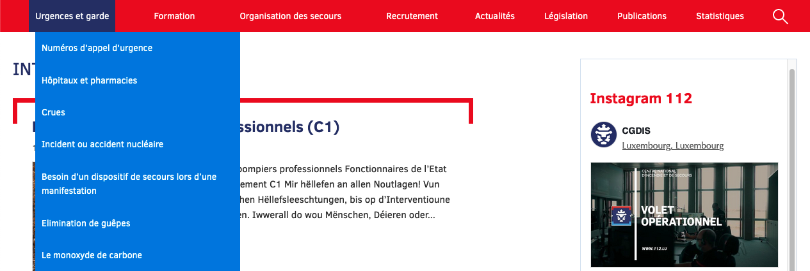Page d'accueil :
- Les sous-menus du menu principal ne peuvent pas être rendus visibles à la prise de focus ;
- Les sous-menus du menu principal ne peuvent pas être masqués sans déplacer la souris ;
- Les infobulles des liens du bloc « Suivez-nous » ne peuvent pas être masquées sans déplacer la souris.
Formulaires
Recommandation :
Associer pour chaque formulaire chacun de ses champs à son étiquette, grouper les champs dans des blocs d'informations de même nature, regrouper les items de même nature dans les listes de choix, donner à chaque bouton un intitulé explicite. Vérifier la présence d'aide à la saisie, s'assurer que le contrôle de saisie est accessible et que l'utilisateur peut contrôler les données à caractère financier, juridique ou personnel.
Contrôle de saisie et aide à la saisie
Tous les champs obligatoires doivent être identifiés préalablement à toute validation de l’utilisateur.
Pour les champs qui attendent un format de saisie particulier pour être validés, ce format doit être spécifié à l’utilisateur par un passage de texte visible à proximité du champ. De plus, si l’utilisateur commet une erreur sur ce champ, alors le message d’erreur doit présenter un exemple réel de saisie.
Enfin, les messages d'erreur de saisie des champs de formulaire doivent être liés correctement aux champs en erreur.
Constats sur le site
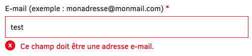Page « Contact », le message d'erreur du champ « E-mail » ne contient pas d'exemple réel de saisie.
Regroupements de champs et légendes
Les regroupements de champs sont utiles pour ne pas induire certains utilisateurs en erreur, notamment les personnes aveugles.
Les cas typiques de regroupements nécessaires sont les groupes de cases à cocher ou de boutons radio.
Il faut implémenter les champs dans un regroupement lorsque c'est nécessaire et il est obligatoire de définir une légende à ce regroupement.
Constats sur le site
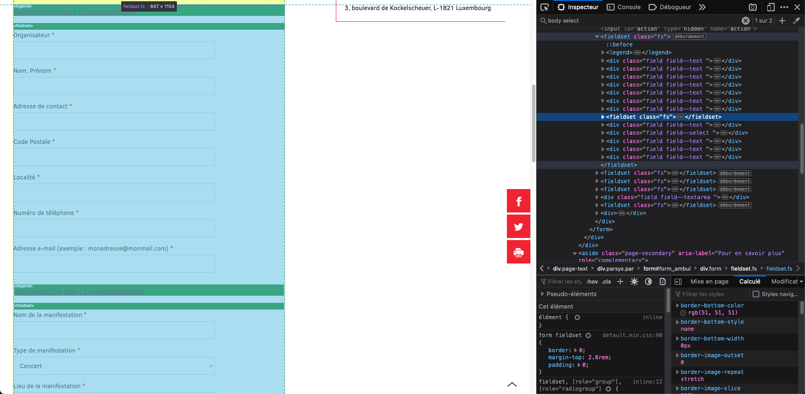 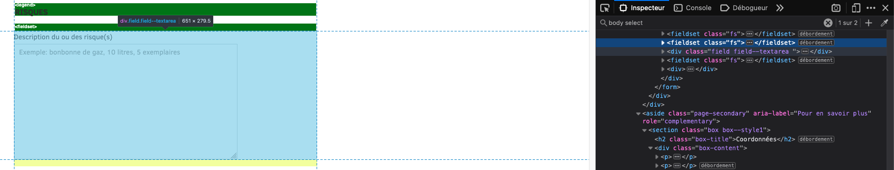Page « Besoin d'un dispositif de secours lors d'une manifestation », des champs ou des groupes de champs ne sont pas correctement imbriqués :
- Les champs du groupe « INFORMATION SUR LA MANIFESTATION » se trouvent à l'intérieur du groupe « INFORMATION SUR L'ORGANISATEUR » ;
- Le champ « Description du ou des risque(s) » ne se trouve pas à l'intérieur du groupe « RISQUES ».
Identification des données attendues
Certains utilisateurs qui ont des troubles d'accès au langage verbal (paralysie cérébrale, aphasie par exemple) auront des difficultés à accéder au sens des termes écrits. Ainsi, pour leur permettre de remplacer les étiquettes présentes dans les formulaires par des étiquettes (verbales ou imagées) qu'ils connaissent, il est nécessaire d'identifier les champs avec un attribut particulier, de sorte qu'une technologie d'assistance pourra réaliser la personnalisation du formulaire nécessaire à l'utilisateur.
L'identification de ces champs permet également aux utilisateurs d'employer des outils pour remplir automatiquement les champs identifiés avec des valeurs de l'utilisateur.
On ne va rechercher que les champs qui attendent une donnée personnelle. Le RGAA demande d'utiliser l'attribut autocomplete et il fournit l'ensemble des valeurs possibles pour l'attribut.
Constats sur le site
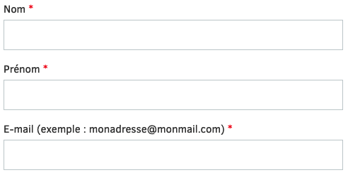Page « Contact », les champs qui attendent des données personnelles ne sont pas identifiés.
Navigation
Recommandation :
Faciliter la navigation dans un ensemble de pages par au moins deux systèmes de navigation différents (menu de navigation, plan du site ou moteur de recherche), un fil d'Ariane et l'indication de la page active dans le menu de navigation. Identifier les groupes de liens importants et la zone de contenu et donner la possibilité de les éviter par des liens de navigation interne. S'assurer que l'ordre de tabulation est cohérent et que la page ne comporte pas de piège au clavier. S'assurer que les raccourcis clavier qui utilisent une seule touche sont contrôlables par l'utilisateur.
Systèmes de navigation
Le RGAA demande qu'un site propose au moins deux systèmes de navigations différents. Prévoir deux systèmes de navigation au moins est important, car :
- tous les utilisateurs ne naviguent pas de la même manière ;
- certains systèmes de navigation peuvent s'avérer trop complexes à utiliser, en particulier pour les personnes qui ont recours à des technologies d'assistance. Par exemple, un menu de navigation trop riche, comme un méga-menu, peut nécessiter beaucoup d'actions pour un utilisateur qui navigue exclusivement au clavier, et donc rendre sa recherche d'information très laborieuse.
Par systèmes de navigation, on entend tout procédé permettant une navigation dans le site ou dans une page, parmi :
- un menu de navigation principal ;
- un plan du site ;
- un moteur de recherche.
Note : un moteur de recherche est considéré comme un moyen de navigation s'il indexe toutes les pages du site (y compris les pages de type « Mentions légales » ou « Politique de confidentialité »), et non pas seulement un choix limité (par exemple, seulement les offres tarifaires).
Le plan du site, s’il est présent, doit être représentatif de l’arborescence du site et ne proposer que des liens fonctionnels.
Constats sur le site
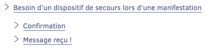Page d'accueil, le plan du site contient un lien qui pointe vers une page 404 et un lien potentiellement non pertinent.
Landmarks ARIA
Pour fournir des points de repère aux utilisateurs aveugles, il faudra également implémenter les landmarks ARIA sur les balises HTML 5 de la page.
Constats sur le site
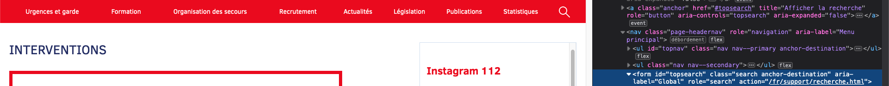Page d'accueil, le landmark role="search" n'est pas correctement positionné : la zone de recherche ne pourra pas être atteinte tant que le bouton « Afficher la recherche » n'aura pas été activé.
Page « Contact », il manque le landmark role="navigation" sur le fil d'Ariane.
Page « Résultats de recherche », la pagination n'est pas identifiée comme zone de navigation.

Page « Actualités », le formulaire de recherche dans les actualités est différent du moteur de recherche global du site, il ne doit donc pas avoir le role="search".
Ordre de tabulation
La navigation dans les contenus peut être considérablement compliquée pour les personnes aveugles ou les personnes handicapées motrices qui naviguent au clavier si l'ordre de tabulation n'est pas cohérent.
L'ordre de tabulation est déterminé par l'ordre des éléments dans le code HTML. Il ne suit pas forcément l'ordre de lecture de la page ou de l'écran, mais il doit être cohérent en fonction de la nature des contenus et des fonctionnalités.
Constats sur le site
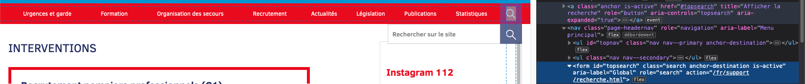Page d'accueil, lorsque l'on navigue au clavier, que l'on affiche le moteur de recherche et que l'on poursuit la navigation, on n'atteint jamais le menu principal : il faut revenir en arrière. Déplacer le bouton « Afficher la recherche » ou la zone de recherche afin que ces deux éléments se suivent.
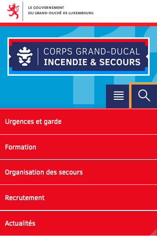Page d'accueil, sur mobile, lorsqu'on affiche le menu principal, on ne tabule pas directement à l'intérieur du menu principal mais d'abord sur le bouton d'affichage du moteur de recherche, comme si le menu n'était pas actif.
Consultation
Recommandation
Vérifier que l'utilisateur a le contrôle des procédés de rafraîchissement, des changements brusques de luminosité, des ouvertures de nouvelles fenêtres et des contenus en mouvement ou clignotants. Ne pas faire dépendre l'accomplissement d'une tâche d'une limite de temps sauf si elle est essentielle et s'assurer que les données saisies sont récupérées après une interruption de session authentifiée. Proposer des versions accessibles ou rendre accessibles les documents en téléchargement. S'assurer que la consultation n'est pas dépendante de l'orientation de l'écran. Toujours proposer un geste simple en alternative d'un geste complexe permettant de réaliser une action.
Documents en téléchargement
Assurez-vous que chaque document soit accessible (cf. les Guides de créations de documents bureautiques accessibles), ou qu'il dispose d'une alternative accessible proposant le même contenu (par exemple, une version HTML correctement structurée).
Constats sur le site
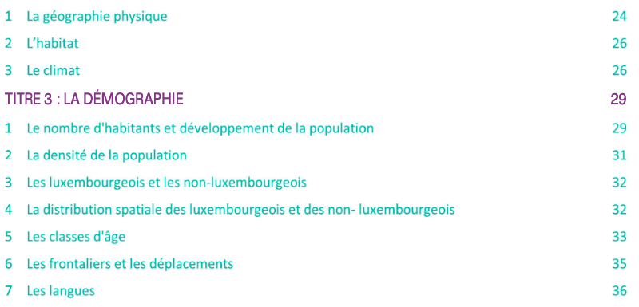 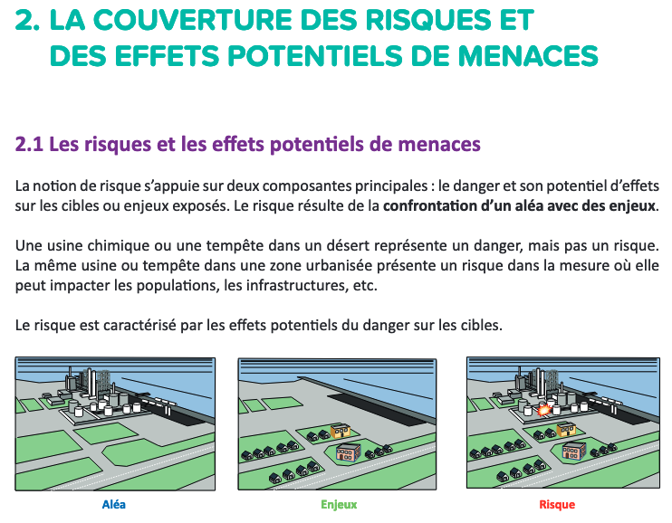Page « Le Plan National d'Organisation des Secours (PNOS) » :
- Les documents PDF « PNOS - Document principal » et « PNOS - Document de synthèse » ne sont pas structurés et possèdent des textes aux contrastes de couleur insuffisants.
- Le document PDF « Questions - Réponses Webinaire PNOS » ne contient pas de titres.